港区三田 Kビル様（7階建て）、港区新橋 Sビル様（8階建て）の床面クリーニングと、外階段高圧洗浄クリーニングの定期清掃をしました!
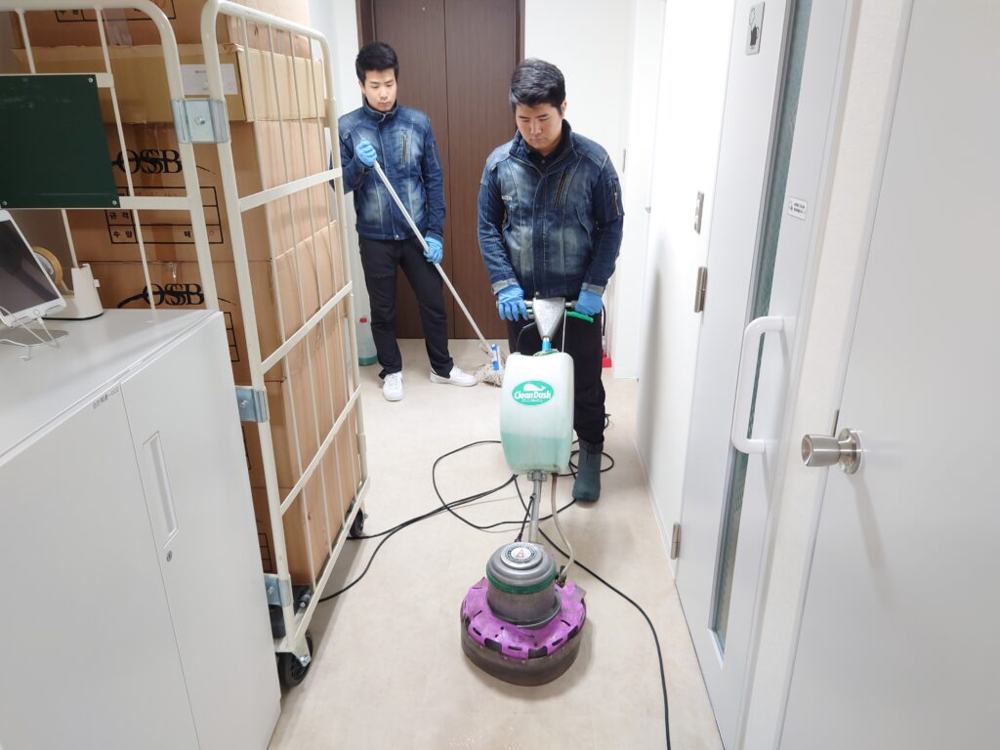
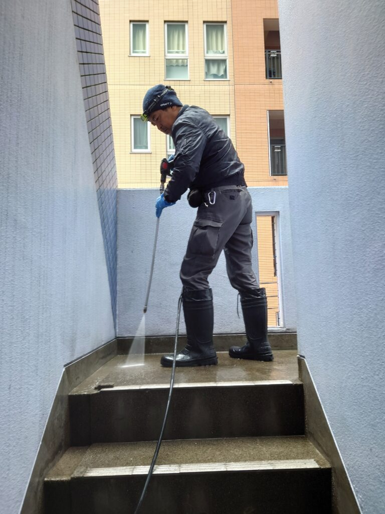
港区三田Kビル様は共用部エントランスのポリッシャー洗浄バキューム仕上げと、年に2回の外階段高圧洗浄クリーニングを実施しました。外階段は冬の間に堆積汚れが相当積もってしまい、カビ汚れ、苔汚れ、土埃の堆積汚れが多量に付着しておりましたが、ドイツ製11.5メガパスカルの強力な水圧を、イタリア製カスタムガンを用いて使用しております！専用高圧洗浄機器でDAIZENプロフェッショナルクリーニングを施し、3時間程でピカピカになりました。港区新橋Sビル様は最上階がオーナー様宅で、各階がテナントさんフロアです。各階共用部通路、男女御手洗い、給湯室のポリッシャー洗浄クリーニングバキューム仕上げで見る見るピカピカになりました!ぜひ、DAIZENのプロフェッショナル定期清掃、特别清掃クリーニングをお試し下さい！電話、ショートメール、eメールでお気軽にお問い合わせ下さい！
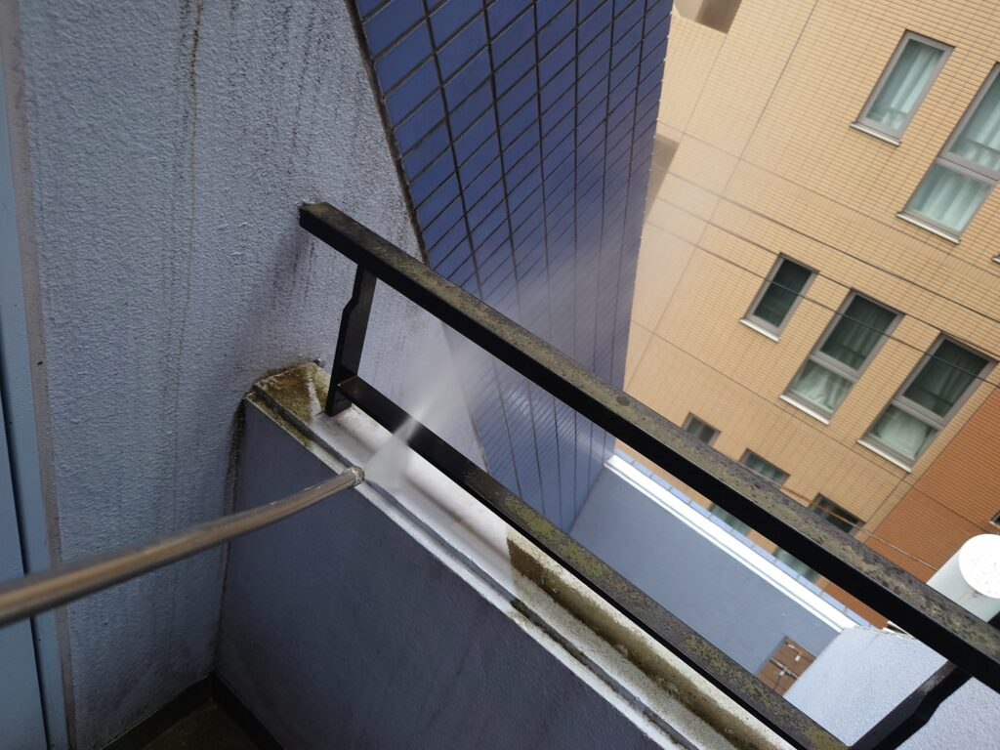
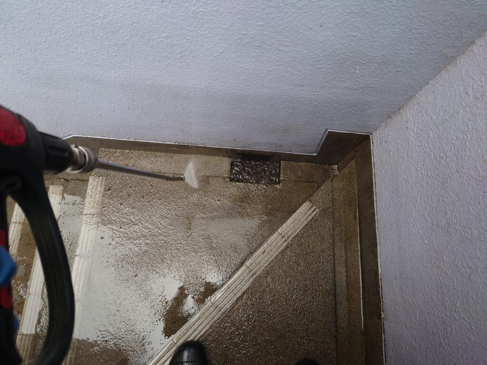
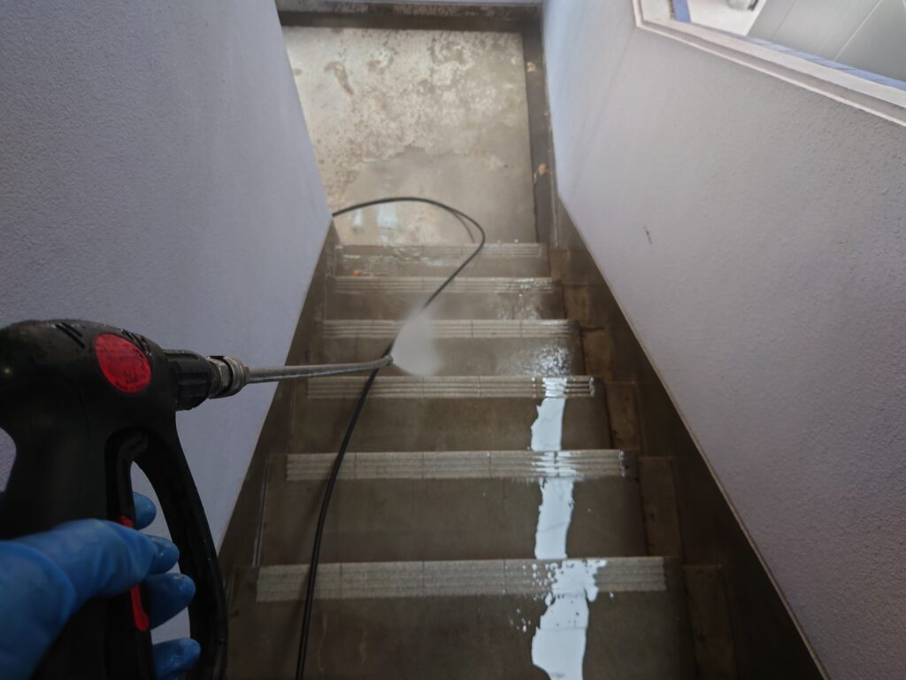
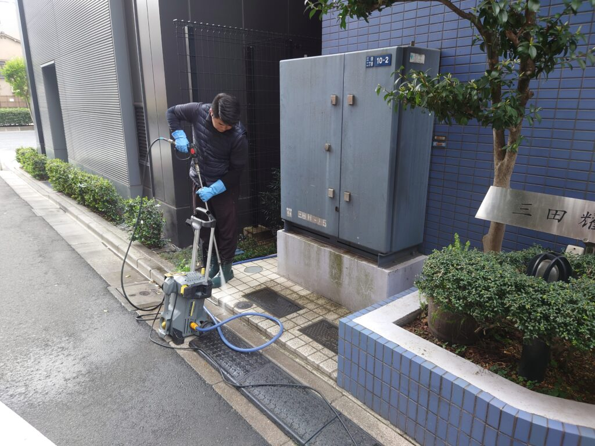
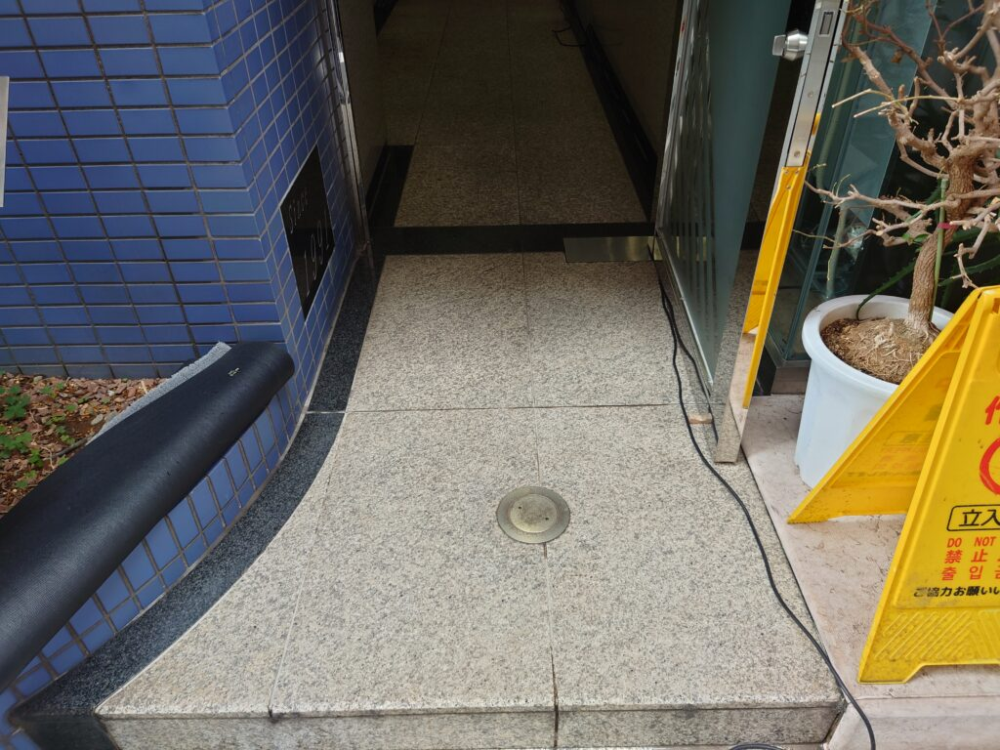
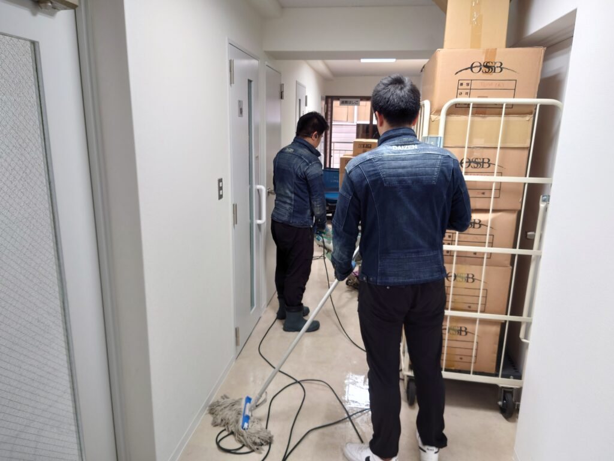
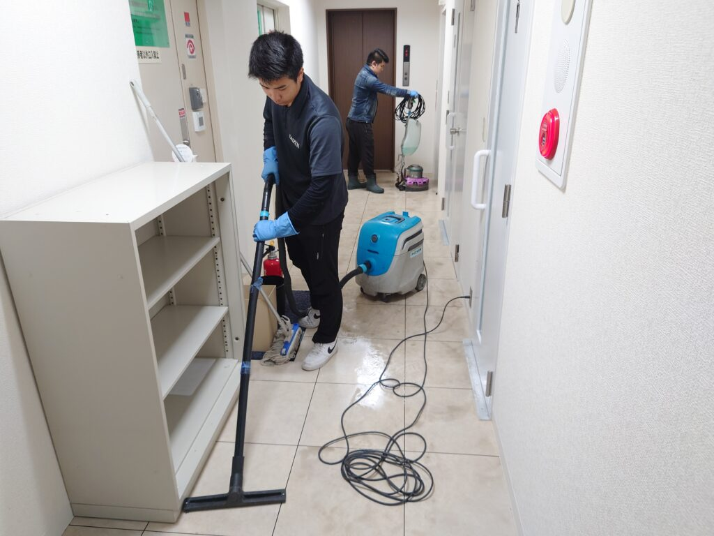
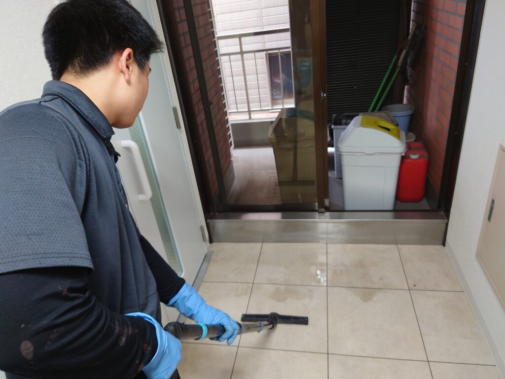
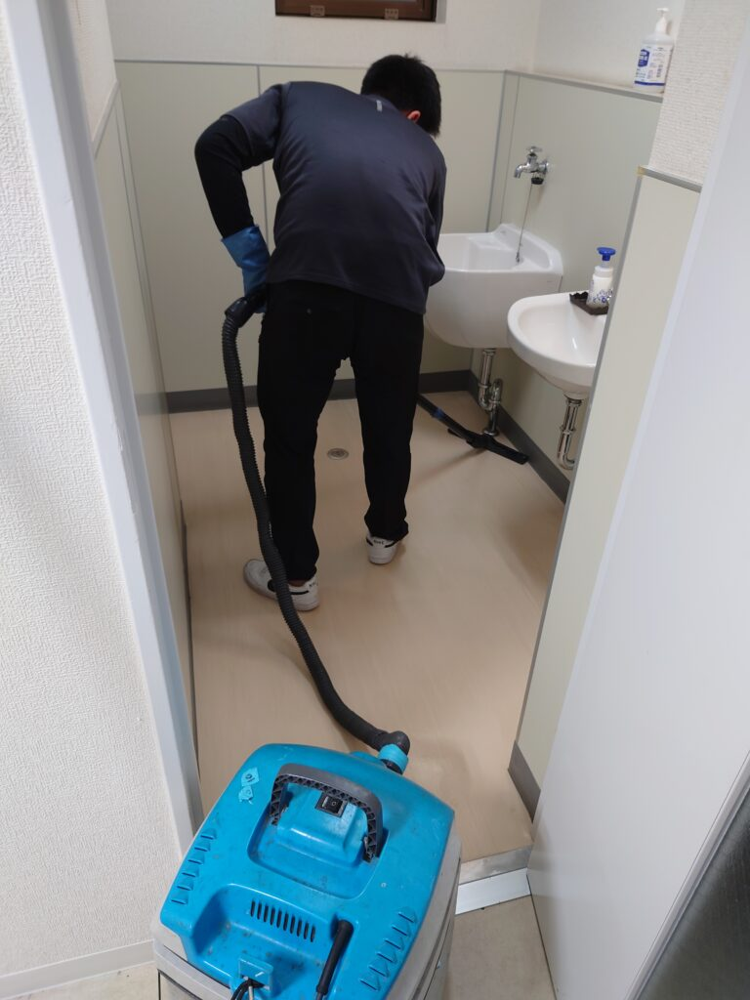
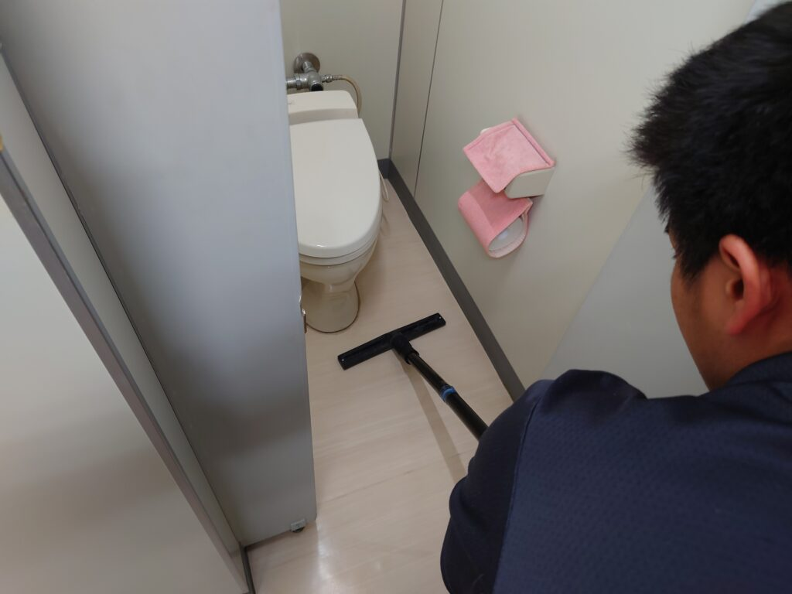
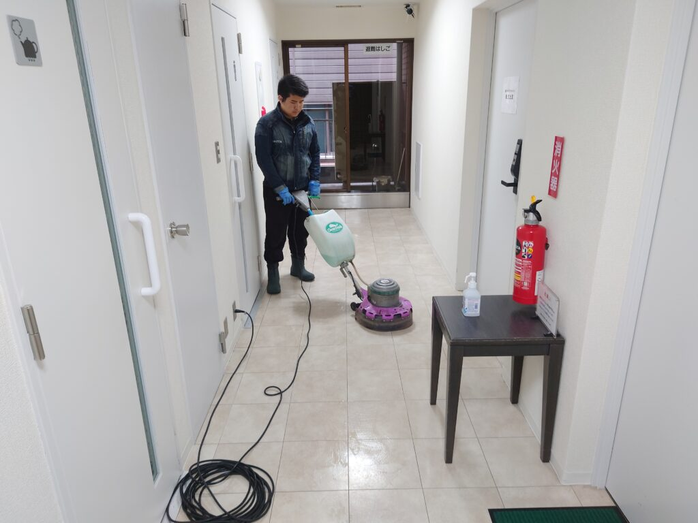